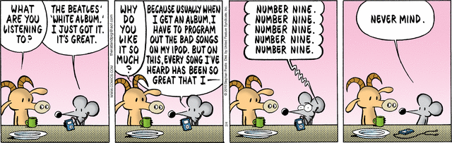

Pearls Before Swine - 2/4/2010

The White Album is a great album, and generally a pleasure to listen to. I know some people love Revolution 9, but I tend to think it sucks.
Previously: Monopoly goes circular for 75th Anniversary Next: Marvin Gaye - The Star-Spangled Banner